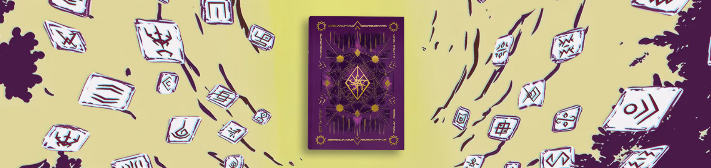
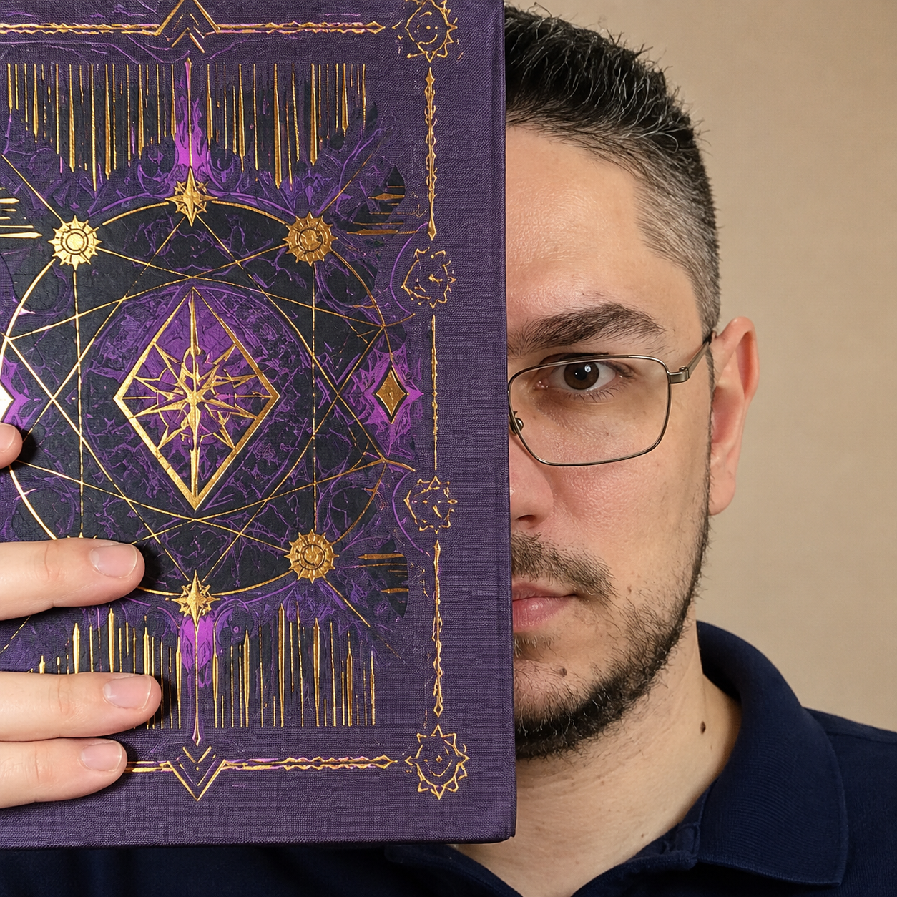
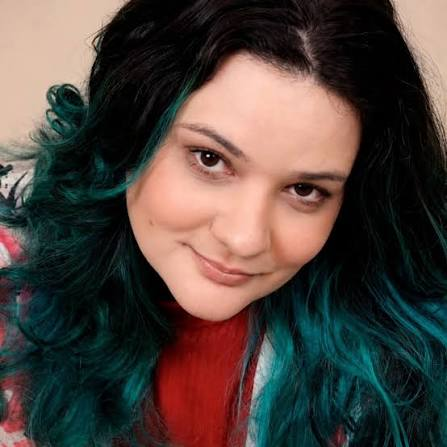
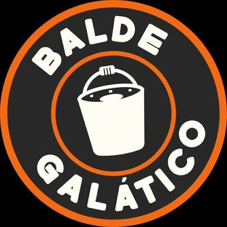

ETMOS RPG é um sistema brasileiro de RPG de mesa de fantasia urbana, criado por Rafael Reis, com a colaboração de Laura do Pantano, A Távola Produções e Balde Galáctico. Seu universo é construído a partir do encontro entre o mundo mundano e o fantástico, explorando a coexistência entre a realidade cotidiana e elementos sobrenaturais, mágicos e extraordinários. O jogo busca oferecer uma experiência de interpretação e construção de personagens dentro desse universo, com uma proposta própria de ambientação, sistema de regras e possibilidades narrativas. Sua estrutura apresenta dois grandes conceitos de cenário, O Mundano e O Fantástico, que representam diferentes aspectos da realidade em que as histórias acontecem. Além do sistema de regras, ETMOS RPG também contempla campanhas, materiais oficiais e uma comunidade de jogadores, oferecendo ferramentas para desenvolver personagens e construir histórias dentro de seu universo.
O Mundano é a dimensão que representa a realidade comum, semelhante ao nosso próprio mundo, onde a sociedade vive sem ter conhecimento da existência do Fantástico. É um lugar essencialmente desprovido de magia, no qual fenômenos sobrenaturais são raros ou praticamente inexistentes. A separação entre os dois mundos mantém suas sociedades isoladas, fazendo com que a maioria dos habitantes desconheça completamente o que existe além de sua própria realidade. Os Portais do Meio são pontos de conexão entre essas realidades, funcionando como passagens capazes de estabelecer contato entre o Mundano e o Fantástico. Eles representam uma ruptura na separação entre os mundos, permitindo que seres, conhecimentos e influências atravessem essa barreira. Sua existência é especialmente importante porque possibilita o encontro entre realidades que, de outra maneira, permaneceriam isoladas.
O Fantástico é a realidade onde a magia e os fenômenos sobrenaturais fazem parte da existência, abrigando criaturas, conhecimentos e sociedades que não são encontrados no Mundano. É um mundo no qual o sobrenatural não é uma exceção, mas parte da própria estrutura da realidade. Nele, a magia possui um papel importante na organização da sociedade, influenciando a cultura, o conhecimento e as relações entre seus habitantes. As Escolas de Magia são instituições dedicadas ao estudo, desenvolvimento e ensino das artes mágicas. Funcionam como centros de conhecimento, onde indivíduos aprendem a compreender e manipular a magia, desenvolvendo suas capacidades e aprofundando seus conhecimentos sobre o Fantástico. Além do ensino, representam espaços de preservação e transmissão do conhecimento mágico. Também incentivam a troca de experiências e preservam diferentes tradições.

é um autor, game designer, dublador, locutor e criador de conteúdo brasileiro, conhecido principalmente pela criação do ETMOS RPG, um sistema de fantasia urbana que explora a relação entre linguagem e magia. Também produz conteúdos sobre RPG de mesa e desenvolve materiais complementares para seu sistema.

Laura Bosi Ribeiro Ferreira é uma criadora de conteúdo e narradora brasileira ligada ao cenário de RPG de mesa. Participa de projetos de criação de conteúdo e narrativas junto à A Távola Produções. No desenvolvimento do ETMOS RPG, contribuiu oficialmente como consultora de arte.
é uma produtora brasileira de entretenimento nerd dedicada à criação de conteúdo sobre RPG de mesa e cultura geek. Liderada por Rafa Reis e Laura do Pântano, desenvolve campanhas, projetos narrativos, transmissões e materiais relacionados ao universo dos jogos de interpretação, incluindo produções envolvendo ETMOS RPG

é uma editora brasileira independente especializada em RPG de mesa e entretenimento analógico. Seu trabalho é voltado à criação e publicação de jogos nacionais, originais e acessíveis, valorizando a criatividade, a diversidade de cenários e novas experiências narrativas. É a responsável pela publicação oficial do ETMOS RPG.